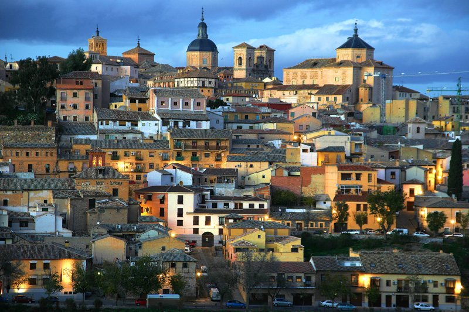
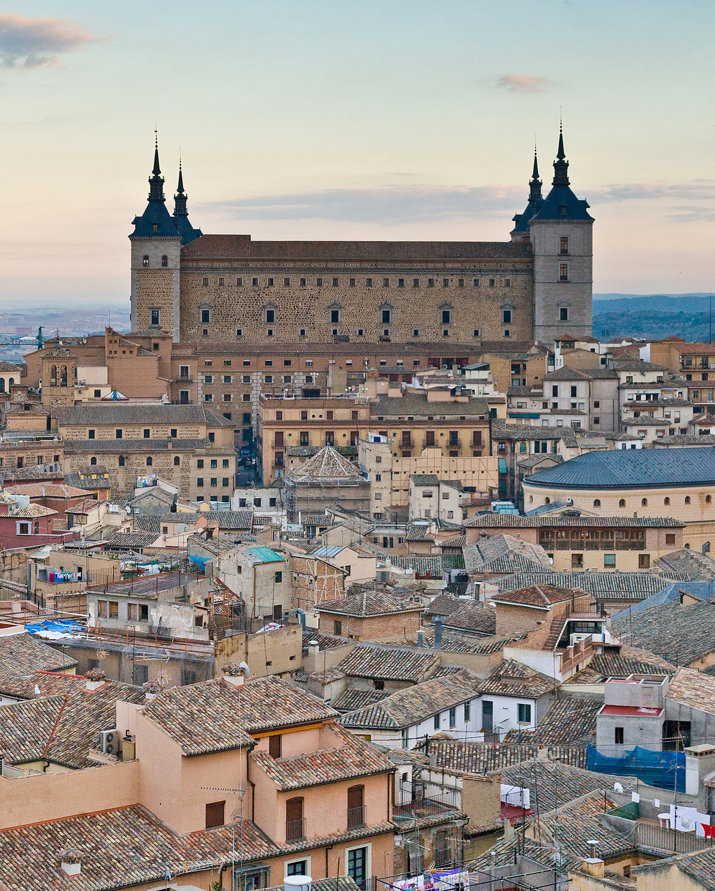
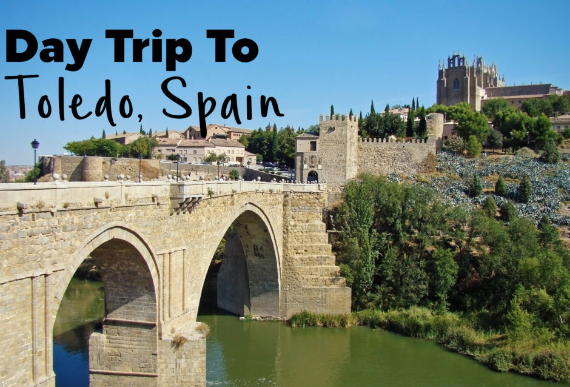
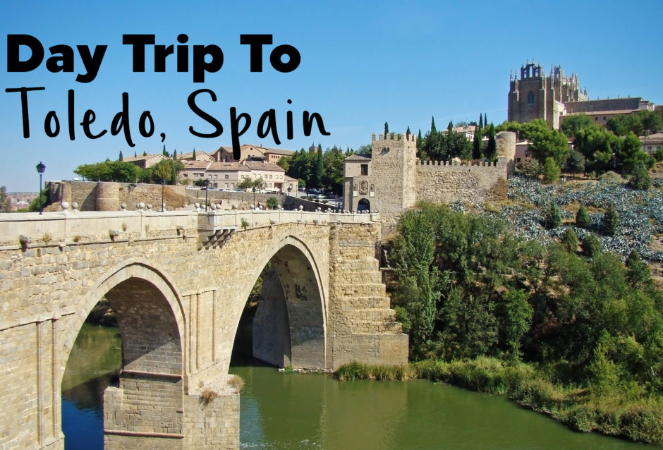

toledo is one of the oldest and most unique cities in Spain. The former Spanish capital before Madrid, this city has made an important contribution to Spain’s history and heritage. Here, you’ll find mosques opposite Catholic chapels, as well as some irresistibly Instagrammable synagogues. Below, we show some of the cool things we love about Toledo, many of which relate to the city’s storied past and the well-preserved landmarks that it has left behind. From stunning sightseeing and rare festivals, to world-renowned swordsmiths and sweet delights that melt in your mouth, here are the reasons why you should visit Toledo at least once in your lifetime.
  
